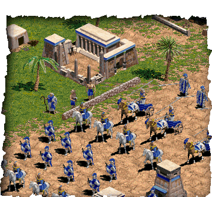

Weeral een fantastisch strategisch spel, nu nog beter dan Planet Blupi.
Dit is gewoon het einde... Geweldige schaduwen, animaties, geluiden, ...
Meer moet dat niet zijn!! Alle mannetjes kun je crieëren d.m.v. vlees
te verzamelen (bvb. van olifanten).
Er bestaat nu al een update van het spel om te spelen in de romeinse tijd. En
die update is nog beter! Aan de graphics kan je echt niets zeggen. Je kan zelfs
je eigen scenario bouwen!
DOWNLOAD hier mijn levels...